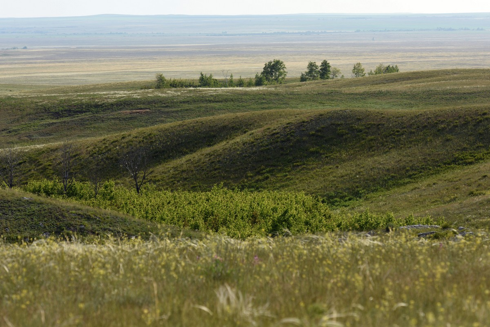

Волжские степи под угрозой
Степь — равнина, поросшая травянистой растительностью, в умеренных и субтропических зонах Северного и Южного полушарий. Характерной особенностью степей является отсутствие или очень малое количество деревьев (не считая искусственных насаждений и лесополос вдоль водоёмов и путей сообщения). Климат на территории российских степей — умеренно континентальный, зима — холодная, солнечная и снежная, а лето — жаркое и сухое. Средняя температура января — −19 °C, июля — +19 °C, с типичными отклонениями до −35 °C и +35 °C. Климат степей также отличается большой продолжительностью безморозного периода, большими среднегодовыми и среднемесячными температурами. Осадков здесь выпадает мало — от 300 до 450 мм. Часто дуют горячие сухие ветры — суховеи. Иногда они переходят в пыльные бури. Дожди здесь редки. Обычно они ливневые. Быстро проходит ливень, и большая часть воды, не успевая напоить почву, потоками стекает в низины.